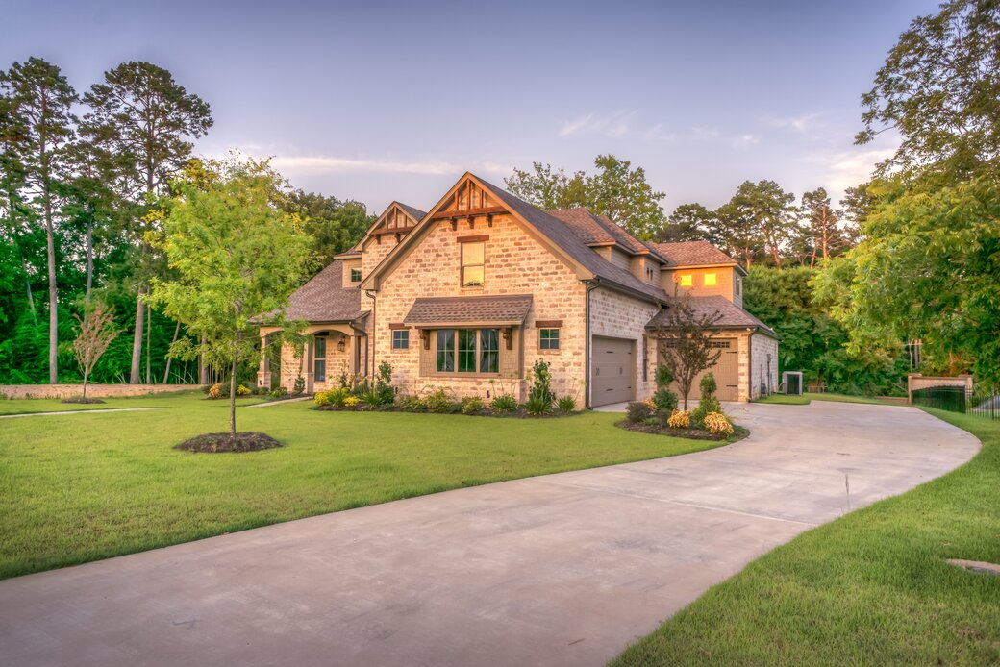
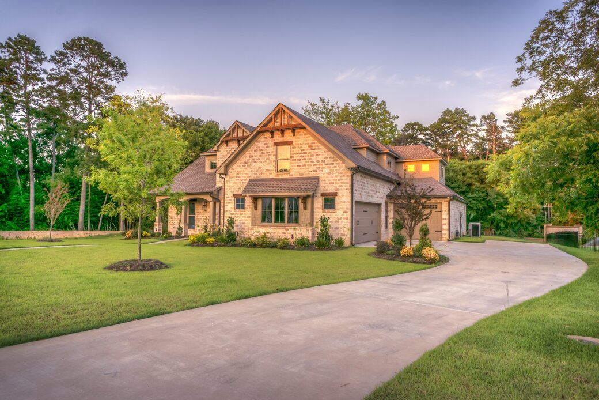

Could your current landscaping use some work? We provide services for the maintenance of your current landscaping. These services include, but are not limited to, fertilization, tree trimming, irrigation, aeration and clean up. We have the resources to effectively custom design and implement your landscape. We work with private homeowners, apartment complexes, parks, schools, hospitals and commercial developments to create landscapes that are functional, safe and aesthetically pleasing.
Landscaping Equipment & Supplies
We carry a full selection of equipment and supplies for those of you who enjoy the challenge and pleasure of creating your own landscape.
Weekly Lawn Service
Did you know that grass can grow anywhere from 2-6 inches a week (depending on temperature, humidity, and time of year) well we provide weekly lawn service. We come out and cut your lawn once a week, day of your choice.
Tree/Bush Trimming
Our crew of professionals deals with many different varieties of bushes and trees. We trim at the beginning of spring and towards the end of fall. Will come out and shape your bushes to proper height and maintain them so they don't get out of control.
Edging
It’s the finishing touch of mowing, kind of like getting a shave after you've had a haircut. An edger is used to trim the lawn along a hard surface like a driveway or sidewalk. They cut a nice clean edge. This is included with lawn our lawn service.
Fertilizer
Most soils are not able to provide all nutrients needed for your grass to develop thick, green, and weed free. We fertilize grass in order to promote leaf and root growth, aid in recovery from foot traffic and pest damage. It also reduces and helps control weeds. There are 2 types of fertilizer liquid and granular fertilizers we apply either one depending on customer consent.
Weed Control
Lawn weeds such as crabgrass and dandelions pose one of the most persistent and annoying challenges in the great American quest to grow decent grass. The fertilizer we apply to your lawn is a combination of both fertilizer and weed control. As nutrients are released, the root system of your grass fills in any bare patches, this in itself promotes lawn weed control, depriving weed seeds of a place to germinate. Thus creating a beautiful, thick, green lawn.
Aerating
Even with the best care available, lawns can thin out and lose color due to excessive thatch buildup, too much foot traffic or pet traffic through specific areas that create hard or compacted soils, or periods of high temperature, high humidity, or drought. Aerating and overseeing is recognized by turf experts such as golf course superintendents as the best treatment to control thatch, helps reduce those compacted areas, fills in bare spots and revitalize growth An aeration treatment removes small cores of soil and thatch to allow air, moisture and nutrients to penetrate down to the root zone. The cores brought to the surface contain microorganisms, which help the breakdown of the woody thatch tissue layer just below the lawn's crown. As the thatch layer is broken down, it is converted into organic matter that will then combine with existing soil particles. Also, as the cores begin to breakdown over a period of several weeks, the holes gradually fill in with a mixture of organic matter and soil, and the filled hole allows roots of existing grass plants to spread out and grow deeper, creating a healthier, thicker lawn.
De-Thatch
Thatch is the built-up of plant material between green growth and the grass roots, is essential, but too much can deter healthy lawn growth. The best time to dethatch your lawn is just before your lawn's most vigorous growth cycle. The best time to dethatch a cool season lawn is late August to Early October depending on your area. During this time the grass is growing vigorously and should recover quickly. Dethatching in the fall is also recommended because at this time the weed seeds are not germinating so that your grass does not have to compete with them.
Mulch
Mulch is any type of material that is spread or laid over the surface of the soil as a covering. It is used to retain moisture in the soil, suppress weeds, keep the soil cool and make the garden bed look more attractive. Organic mulches also help improve the soil’s fertility, as they decompose. Wood chips are a very popular mulch because of its neat appearance, as well as its hardiness. We carry mulch in Brick Red, Cedar Color, Chestnut, Walnut (Dark Brown), Beer Nuts and even New York Jets Black.
Sod
To start new lawns, or even repair damaged lawns, many people wonder which is better: laying sod or sowing grass seed. While seeding is cheaper and offers a wider variety of grass types, many people are won over to laying sod. Laying sod is fast and produces high-quality new lawns. In fact, laying sod is so fast, it's fair to say it gives you an "instant lawn.
Over Seeding
Over seeding is an overlooked activity in American home lawn care. Gardeners assume that fertilizer is all that is needed to keep a turf thick and free of weeds. Grass gets tired. It needs to be revitalized every few years. Over seeding is one of the most important lawn care tasks, yet few homeowners ever do it. Over seeding compensates for that natural slow down of the turf's reproduction. There are two major benefits to over seeding every three or four years. First, you insure your lawn stays thick and dense, or if it has thinned, you will make it thick again. Thick grass has few if any weeds if it is mowed over 2 inches tall. The second benefit is disease resistance. The new varieties of seed you sow this year will have better disease resistance than those varieties already in your lawn.
Grub Control
One such pest actually eats the roots of grass. This pest is quite common and can appear anywhere in the United States. Grubs are the larval stage of beetles. There are many types of grubs but the ones which live in the dirt under grass are most likely Japanese Beetle, June Beetle, May Beetle, Black Turfgrass, Asiatic Garden or some other regional beetle which lays eggs whose larva feed on plants Grubs can vary greatly in size Grubs live just under grass, usually 6 inches to a few feet down. Such results will include dead grass, plants and flowers their presence tends to attract all kinds of animals. Moles, armadillo, badgers, birds, mice, rats, voles, shrews, gophers, groundhogs, muskrat, opossum, raccoon, prairie dogs, and skunk and snufalufaguses are just some of the animals which will readily tear up and pull apart lawns in an effort to find grubs. Grub control will eliminate any potential problems and eliminate all the grubs.
Dog Waste Removal
We come to your home and comb thru your property for any dog waste or pet waste. Since stools are usually solid, owners have the option of frequent manual removal. With more time for the nitrogen waste to dissolve into the lawn, stools that are frequently removed, damage lawns less than urine.
Drain Tile installation
Drain tile systems serve too purposes. Water removal away from the house and water injection into the soil foundation during drought. Drought conditions can cause the soil of your foundation to shrink, causing foundation and footer to fall. We come to you’re home evaluate where drain tile is needed and how to pull water away from the wet areas.
Custom Design- Landscape
Typically, when we do a custom design, we take the customers ideas, and combine them with a few of ours. We combine our landscape expertise and new landscape styles to create you the landscape of your dreams. Will measure how much space you have to work with. Go over types of material and different styles and create a landscape design for you. Custom Design- Pavestone Paths, Driveways, Back porches Retaining Walls Typically when we do a custom design, we take the customers ideas, and combine them with a few of ours. We combine our landscape expertise and new landscape styles to create you the landscape of your dreams. Will measure how much space you have to work with. Go over types of material and different styles and create a landscape design for you.
Spring/Fall Cleanup
Will come through your whole property, blow dry all the leaves out of your garden bed, cut down any perennials, remove any plant foliage and waste off of your property. We will leave your property clean and ready to begin the season.
Snow Plowing
Our fleet of truck is ready to come service your property. We service both residential and commercial properties. We service your property once 2" of snow accumulate, and maintain it nice and clean throughout the winter season. Salt Spreading We have salt spreaders on our truck, we usually only salt upon customer request, or when hazardous winter conditions create accumulation of wet snow and ice.